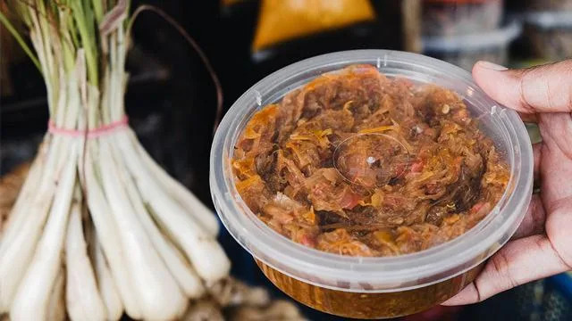

DELICACIES


Tiyula Itum
Tiyula Itum, the famous “black soup” of the Tausug of Sulu, is made by mixing burnt coconut with rich beef broth to create its striking dark color. Originally prepared for royalty, weddings, and important Muslim rituals, its deep hue symbolizes purity and respect. This bold, elegant soup continues to be a meaningful dish in Tausug traditions.
--------------------------------------------------------------------------------------------------------------------------------------------------------------------

Kinilaw
Kinilaw, one of Mindanao’s oldest dishes, originated in coastal pre-colonial communities where fishermen used vinegar, citrus, and coconut to “cook” freshly caught seafood without fire. With Mindanao’s rich supply of fish and shellfish, this bright and tangy preparation became a daily staple. Its fresh flavors beautifully capture the island’s deep connection to the sea.
--------------------------------------------------------------------------------------------------------------------------------------------------------------------

Palapa
Palapa is a fragrant, spicy condiment deeply rooted in Maranao culture, made from sakurab (native scallion) , ginger, chilies, and spices. Traditionally, it helped preserve food before refrigeration and quickly became a symbol of warmth and hospitality. Sharing palapa with guests remains a cherished gesture that reflects Maranao generosity and pride.
--------------------------------------------------------------------------------------------------------------------------------------------------------------------

Chicken Piaparan
Chicken Piaparan, a comforting dish from the Maranao, blends turmeric, ginger, coconut milk, and a generous amount of palapa, with shredded coconut giving it its name. Rooted in ancient Maranao cooking traditions, it is enjoyed both at home and during celebrations. Creamy, aromatic, and warmly spiced, Piaparan embodies the heart of Maranao cuisine.
--------------------------------------------------------------------------------------------------------------------------------------------------------------------